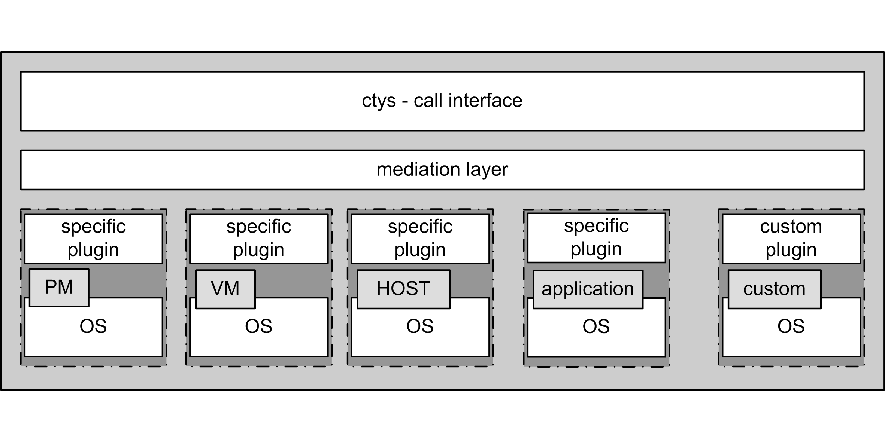

ctys-plugins
August, 2010
.
NAME
ctys-plugins - verifiescurrent install status of ctys
SYNTAX
ctys-plugins
[-d <common-debug-option>]
[-E ]
[-h]
[-H <help-options>]
[-l <remote-user>]
[--quick-list]
[--quick-tab]
[-t <plugin-type>]
[-T <plugin-preload-typelist>]
[-V]
[-X]
[-Z <set-sudo-ksu>]
<list-of-target-acounts>
DESCRIPTION
ctys-plugins is a test-tool for verification and analysis of the
current status of the installation of ctys and present plugins.

| ctys SW-Layers and Plugins |
Due to some restrictions it operates partly on a basic level, involving some specific
pre-defined trace levels for output control.
The required options are documented in the following sections.
Extended trace-levels neccessarily require some deeper
familiarity with internal design, which is normally not
required for top-level handling.
The utility could be performed locall or remotel by full support of
ctys-addressing but without context options on the command line. If
for whatever reasons remote context options are reuqired, than could
be applied to macro definitions only.
For now the following main tasks are performed by ctys-plugin:
The output is splitted into 3 sections:
- The first section is the bootstrap of the tool itself, this includes the basic intialization of the framework, where only framework specific options are evaluated. Typical for this is the "-d" option, which is prefetched by the library itself.
.
OPTIONS
ctys-plugins
- -d <debug-options>
-
This option is the common analysis and debugging facility of the
UnifiedSessionsManager. Due to the wide scope it is maybe somewhat
"like a developer interface".
Anyhow, the most important application is for installation
and first time systems configuration by
analysis of the called system utilities.
The difficulties with the bunch of utilized systems calls frequently
leads to some trouble, which becomes immediately obvious, once the
output of the following call is displayed:
"ctys-plugins -d 64,P -T all -E"
This call checks all system calls for the
current node as a final execution location.
The availability as well as (some) access
permissions are evaluated. When things don't work, this call is the
first instance to "ask".
The "-d" option activates a bit-pattern style debug-level by "P"
suboption. Than the bit "64" is set, which is the predefined variable
"D_SYS", tracing the internal call-wrapper, almost exclusively used
for system calls. When not appropriate, the workaround is implemented
in a neatless style.
The "-T" option sets simply "all" plugings to be loaded and initialized.
The "-E" option executes a final destination call, instead of an
initial or intermediary RELAY-call.
The following call performs almost the same, but as
the current node as a client or RELAY.
"ctys-plugins -d 64,P -T all"
- -E
-
Check for local host as final execution target, this forces full verification.
If "-E" is not set, only required functionality for a client role is
validated, which could be for some packages almost the same and though
treated as.
-
This is e.g. the case for PM.
-
This is e.g. not the case for XEN, which obviously requires a completly different runtime environment for it's clients than within the server as Dom0/DomU
-
This e.g. could be or not the case for VMW, depends on type of product + version + requested type of client.
- -h
-
Print help, refer to "-H" for additional information.
- -H <help-option>
-
The extended help option is based on system interfaces for display of
manpages, PDF and HTML documents.
This comprises the man pages and installed manuals.
For additional help refer to the documents or type ctys -H help.
- -l <remote-user>
-
The remote user.
- --quick-list
-
Displays a short list of overall states for selected plugins on each target.
ctys-plugins -E -T all --quick-list localhost
Hostname Plugin Accelerator Version MAGIC-ID State
------------------------------------------------------------------------------
acue@ws2 CLI 01.06.001a09 CLIBASH ENABLED
acue@ws2 RDP 01.11.007alpha RDPRD ENABLED
acue@ws2 VNC 01.10.013 VNCR4 ENABLED
acue@ws2 X11 01.06.001a09 X11 ENABLED
acue@ws2 QEMU QEMU 01.10.013 QEMU_091 DISABLED
acue@ws2 VBOX 01.11.006alpha NOLOC DISABLED
acue@ws2 VMW 01.11.005 VMW_GENERIC DISABLED
acue@ws2 XEN 01.10.013 DISABLED DISABLED
acue@ws2 PM VMX 01.10.008 PM_Linux ENABLED
- --quick-tab
-
Displays a short table of overall states for selected plugins.
The following call contains the 'ctys-groups' call for stripping off
context arguments, which in some cases are valid, thus could not
be dropped in general.
When this is not done, some might be detected as valid and lead to execution.
In future releases a new scanner and parser are foreseen to be provided,
which will clear this specific.
ctys-plugins -T all -E --quick-tab $(ctys-groups -X -m 8 netscan/all)
For limitation of error messages and some ssh info the error channel should be redirected.
ctys-plugins -T all -E --quick-tab $(ctys-groups -X -m 8 netscan/all) 2>/dev/null
This results to the following list, where the output order may vary call-by-call
due to parallel execution.
Hostname | PM | CLI X11 VNC RDP | KVM QEMU VBOX VMW XEN
----------------------+--------+---------------------+---------------------------------
root@lab05.soho | PAE | x x x x | - - - S2 -
root@lab02.soho | VMX | x x x x | - QEMU V - -
root@hydra.soho | VMX | x x x x | - - - - -
root@delphi.soho | VMX | x x x x | - - - S1 -
root@olymp.soho | VMX | x x x x | - - - - -
root@app1.soho | VMX | x x x x | - - - - -
root@app2.soho | VMX | x x x x | - - - - -
root@lab04 | VMX | x x x x | - - - W7 -
acue@lab04 | VMX | x x x x | - QEMU - W7 -
vadmin@delphi.soho | VMX | x x x x | - - - S1 -
acue@lab05.soho | PAE | x x x x | - - - S2 -
acue@lab02.soho | VMX | x x x x | - QEMU V - -
acue@delphi.soho | VMX | x x x x | - - - S1 -
root@lab03 | PAE | x x x x | - - - - HVM
root@lab01.soho | PAE | x x x - | - - - - PARA
5000@lab01.soho | PAE | x x x - | - - - - -
acue@lab03 | PAE | x x x x | - - - - -
acue@app1.soho | VMX | x x x x | KVM KVM - - -
acue@app2.soho | VMX | x x x x | KVM KVM - - -
Where the fields have the semantics as given by following list, the values are foreseen to be
expanded for more details:
- PM: Type of CPU support
- VMX: Intel VT-X
- SVN: AMD SVN
- PAE: Extended Mem by PAE
- HOSTS: CLI, X11, VNC, RDP
- x: ENABLED
- else: DISABLED
- VMs: KVM, QEMU, VBOX, VMW, XEN
- Common:
- KVM: Fully ENABLED, else check
- QEMU: ENABLED without KVM-Support, else check
- VMW
- P[123]: Player
- S[12]: Server
- W[67]: Workstation
- C2: Client only with standalone remote console VMRC.
- XEN
- HVM: Fully ENABLED, else check
- PARA: ENABLED with para-virtualisation only, else check
- .
-
The output display shows e.g. that:
- On app1+app2: The user acue has access to KVM and QEMU, but not root.
This is due to missing VDE-switch for root, which has to be setup
by 'ctys-setupVDE'
- On lab03: The user acue has no access to XEN, but root has.
This is due to access permission by sudo for user acue.
- -t <plugin-type>
-
The type of plugin to be set to BUSY(4), this is any SINGLE plugin as
applicable by "ctys -t ..." call.
- -T <plugin-preload-typelist>
-
The prefetch list of plugins to be set to IDLE(2), before performing,
this is any comma seperated LIST of plugins as applicable by "ctys -T ..." call.
- -V
-
Version.
- -X
-
Terse output format, effects "-V" when set left-of.
- -Z <set-sudo-ksu>
-
Sets appropriate access permissions by sudoers and/or kerberos/ksu. For
additonal information refer to Z-OPTION.
.
ARGUMENTS
An optional list of <execution-target>. When the "-P" option is
choosen, the remote files will be updated, when suffitient permissions
are available, else the output is collected locally. The call is
simply mapped to a call of the CLI plugin with the option CMD, thus
works syncronuous and sequential.
.
EXIT-VALUES
- 0: OK:
-
Result is valid.
- 1: NOK:
-
Erroneous parameters.
- 2: NOK:
-
Missing an environment element like files or databases.
SEE ALSO
- ctys plugins
-
- PMs
-
ctys-PM(7)
- VMs
-
ctys-KVM(7), ctys-QEMU(7), ctys-VMV(7), ctys-XEN(7), ctys-VBOX(7)
- HOSTS
-
ctys-CLI(7), ctys-PM(7), ctys-VNC(7), ctys-X11(7)
- ctys executables
-
ctys-genmconf(1)
- system executables
-
dmidecode(8)
AUTHOR
Written and maintained by Arno-Can Uestuensoez:
COPYRIGHT
Copyright (C) 2008, 2009, 2010 Ingenieurbuero Arno-Can Uestuensoez
This is software and documentation from BASE package,
- for software see GPL3 for license conditions,
- for documents see GFDL-1.3 with invariant sections for license conditions.
The whole document - all sections - is/are defined as invariant.
For additional information refer to enclosed Releasenotes and License files.